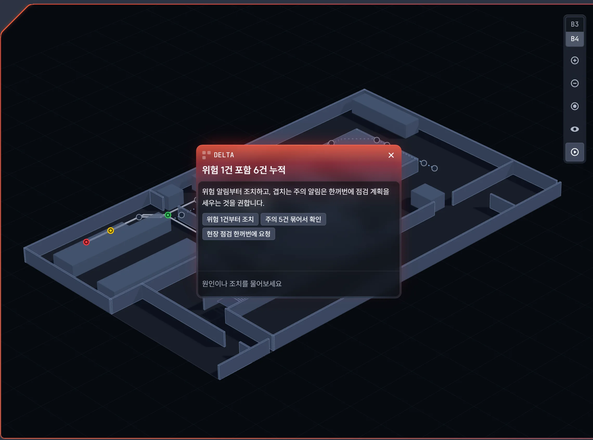
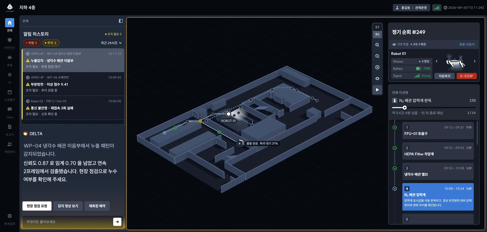
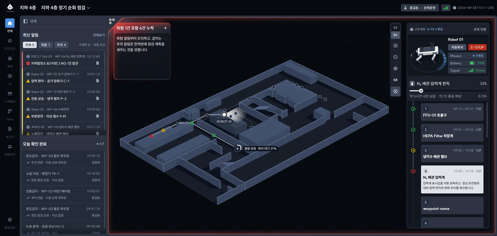
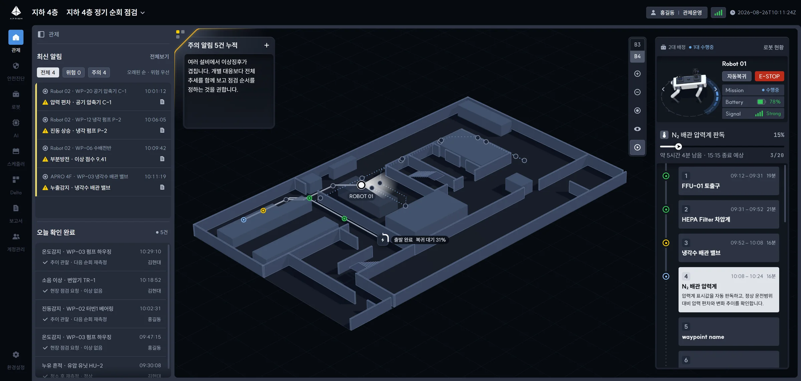
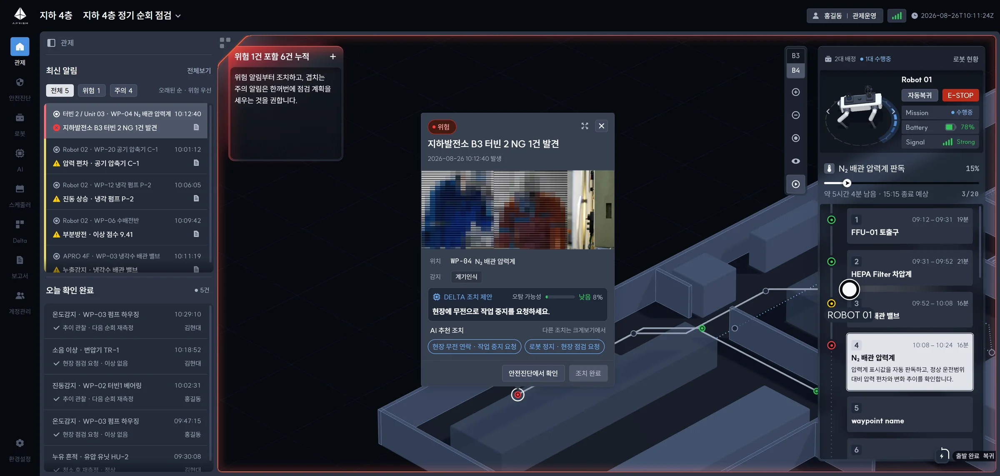
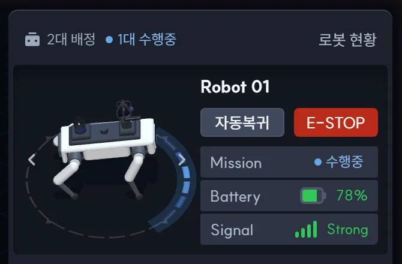

SINCE SIAN 1
시안 1 이후
달라진 점
자문받은 시안 1-A(좌측 패널형) · 1-B(모달형)(2026.09.17)에서 지금의 v2.2 미션 기준 화면까지. 사이에 v2(09.21) · v2.1(09.28, 10.06 클라이언트 회의)을 거쳤습니다.

01
화면의 기준
시안 1-A · 1-B
상태바에 장소(지하 4층)만 있었다. 알림은 최근 24시간을 모두 보여, 지금 돌고 있는 순회와 섞였다.
v2.2
상태바에서 미션을 고른다. 고른 미션 하나로 최신 알림 · 로봇 패널 · 지도 층이 같이 바뀌고, 미션이 끝나면 알림은 알림 센터로 간다.
관제자가 실제로 지켜보는 단위는 "이번 순회"다(10/06 클라이언트 회의).


03
Delta(AI)의 역할
시안 1-A · 1-B
1-A 는 고른 알림 하나를 큰 글씨로 해설하고, 행동 버튼 셋과 입력창이 늘 열려 패널 절반을 썼다. 1-B 는 지도 아래 띠 하나.
v2.2
알림 하나가 아니라 전체 알림을 종합해 판단한다("위험 1건 포함 6건 누적"). 지도 왼쪽 위 모서리의 작은 창으로 접힘 · 펼침 · 대화를 오가고, 입력창은 열었을 때만 보이며 너비를 끌어 조절한다.
알림을 고를 때마다 같은 말을 따라 하던 해설은 목록과 겹쳤다. AI 는 여러 건을 묶어 볼 때 쓸모가 있다.



04
경고의 강약
시안 1-A · 1-B
위험은 지도 네 변에 빨간 테, 주의도 네 변에 노란 테. 세기가 같아 늘 경보 상태처럼 보였다.
v2.2
위험은 네 변 빛과 Delta 판의 빛. 주의는 Delta 모서리에만 노란 빛. 화면의 경고 색은 하나(가장 높은 단계)로 맞췄다.
주의가 잦은 현장에서 늘 켜진 경보는 무뎌진다 — 위험이 확실히 튀도록 주의를 덜어냈다.




05
알림 확인 · 조치
시안 1-A · 1-B
1-B 는 화면을 덮는 큰 모달에서 ① 확인 ② 지점 ③ 조치를 차례로 — 지도와 다른 알림이 가려졌다. 1-A 는 Delta 버튼으로.
v2.2
알림을 고르면 지도 위 웨이포인트 옆 쪽지가 뜬다. 사진 · 위치 · DELTA 조치 제안을 보고 조치를 골라 [조치 완료] — 줄이 오늘 확인 완료로 내려가고 되돌리기가 남는다.
어디서 일어났는지(지도)를 보면서 처리해야 판단이 빠르고, 화면을 떠나지 않는다.


06
로봇 패널
시안 1-A · 1-B
연결된 로봇 전체(11대 연결 · 3대 수행중)가 대상. 1-B 는 세 대를 카드로 나열하고 자동복귀 · E-STOP 이 "수행 로봇 전체" 버튼이었다.
v2.2
미션에 배정된 로봇만("2대 배정 · 1대 수행중"), 한 대씩 크게 넘겨 본다. 자동복귀 · E-STOP 은 보고 있는 로봇 옆에. 미션 밖 로봇은 [로봇 현황]이 맡는다.
비상 버튼은 누르는 대상이 분명해야 한다.


